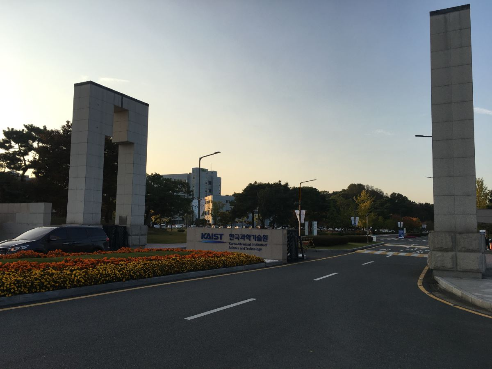

01 / ÜNİVERSİTEYİ TANIYALIM
KAIST NEDİR?
Korea Advanced Institute of Science and Technology.
1971’de kurulan; Daejeon’da bilim, mühendislik ve teknoloji araştırmalarına odaklanan köklü bir üniversite.
#65QS 2027
Dünya Üniversiteleri
Dünya Üniversiteleri
#24QS 2025
Mühendislik ve Teknoloji
Mühendislik ve Teknoloji

Gerçek KAIST ana giriş fotoğrafı · Kaynak: QS / KAIST